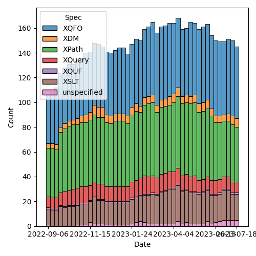
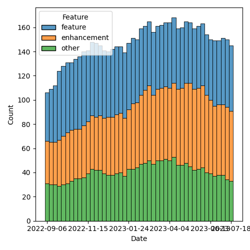

QT4 CG Meeting 043 Minutes 2023-07-25
Table of Contents
Agenda index / QT4CG.org / Dashboard / GH Issues / GH Pull Requests
Minutes
Approved at meeting 044 on 5 September 2023.
Summary of new and continuing actions [0/5]
[ ]QT4CG-002-10: BTW to coordinate some ideas about improving diversity in the group[ ]QT4CG-016-08: RD to clarify how namespace comparisons are performed.[ ]QT4CG-026-01: MK to write a summary paper that outlines the decisions we need to make on “value sequences”- This is related to PR #368: Issue 129 - Context item generalized to context value and subsequent discussion.
[ ]QT4CG-029-07: NW to open the next discussion of #397 with a demo from DN See PR #449[ ]QT4CG-039-01: NW to schedule discussion of issue #52, Allow record(*) based RecordTests[ ]QT4CG-042-01: NW to use sequences instead of arrays inparse-urioutput.[ ]QT4CG-042-02: NW to make the query into a simple map with repeated values.[ ]QT4CG-042-03: NW to consider revisions to query parses.[ ]QT4CG-043-01: CG to consider a different name forfn:void[ ]QT4CG-043-02: MSM to review PR #635[ ]QT4CG-043-03: NW to work on issue #608[ ]QT4CG-043-04: NW to try to resolve the problem of diffs that mix PR texts.[ ]QT4CG-043-05: NW to review what’s wrong with PR #633[ ]QT4CG-043-06: NW to consider if there’s any low-hanging-fruit in replacing external parsed entities with XInclude
1. Administrivia
1.1. Roll call [8/10]
[X]Reece Dunn (RD)[ ]Sasha Firsov (SF)[X]Christian Grün (CG)[X]Joel Kalvesmaki (JK)[X]Michael Kay (MK)[X]John Lumley (JL)[X]Dimitre Novatchev (DN)[ ]Ed Porter (EP)[X]C. M. Sperberg-McQueen (MSM) [x:15-][X]Norm Tovey-Walsh (NW). Scribe. Chair.
1.2. Accept the agenda
Proposal: Accept the agenda.
Accepted.
1.2.1. Status so far…

Figure 1: “Burn down” chart on open issues

Figure 2: Open issues by specification

Figure 3: Open issues by type
1.3. Approve minutes of the previous meeting
Proposal: Accept the minutes of the previous meeting.
Accepted.
1.4. Next meeting
The next meeting is scheduled for Tuesday, 29 August 2023.
No regrets heard.
The CG will take a vacation for four weeks in August. We will not meet on 1, 8, 15, or 22 August.
1.5. Review of open action items [1/6]
[ ]QT4CG-002-10: BTW to coordinate some ideas about improving diversity in the group[ ]QT4CG-016-08: RD to clarify how namespace comparisons are performed.[ ]QT4CG-026-01: MK to write a summary paper that outlines the decisions we need to make on “value sequences”- This is related to PR #368: Issue 129 - Context item generalized to context value and subsequent discussion.
[ ]QT4CG-029-07: NW to open the next discussion of #397 with a demo from DN See PR #449[ ]QT4CG-039-01: NW to schedule discussion of issue #52, Allow record(*) based RecordTests[ ]QT4CG-042-01: NW to use sequences instead of arrays inparse-urioutput.[ ]QT4CG-042-02: NW to make the query into a simple map with repeated values.[ ]QT4CG-042-03: NW to consider revisions to query parses.
2. Technical Agenda
2.1. Review of open PRs
- PR #368: 129: Context item generalized to context value
- Revise
- PR #412: 409, QT4CG-027-01: xsl:next-match
- XSLT
- PR #470: 369 add fixed-prefixes attribute in XSLT
- Revise
- PR #529: 528: revision of json(), and renaming to xdm-to-json()
- MK: There are open comments to reduce its scope.
- Leave open
- PR #533: 413: Spec for CSV parsing with fn:parse-csv()
- Merge
- PR #538: Attempt to allow xs:string to be 'promoted to' xs:anyURI
- Revise
- PR #546: 414: Attempt to implement expanding the allowed character repertoire
- Merge
- PR #575: 359: fn:void: Absorb result of evaluated argument
- DN: The name isn’t very informative
- ACTION QT4CG-043-01: CG to consider a different name for fn:void
- Merge
- PR #589: 561: abbreviation fn=function, drop lambda syntax
- Merge
- PR #599: 90: Simplified stylesheets with no xsl:version
- XSLT
- PR #603: 602 Implausible Expressions
- JL: Is it provable that something is going to give an error?
- MK: No, they mostly return an empty sequence which can be hard to diagnose. It’s a case where we’re pretty sure you’ve done something that only succeeds by accident.
- DN: Is there a full list of possible expressions?
- MK: No, it’s entirely defined by the spec. There isn’t a centralized list, there’s a distributed one.
- Merge
- PR #606: Allow element(A|B) and attribute(A|B)
- MK: Slight refactoring of existing syntax.
- Merge
- PR #609: 508: New Map & Array Functions: Inconsistencies
- Merge
- PR #619: XDM ch. 6 minor edits
- Revise
- PR #623: Issue93 sort descending
- Leave open
- PR #627: Adjusted function category descriptions
- Revise
- PR #629: 574: fn:log: Trace and discard results
- Merge
- PR #630: XPath spec ch. 3 minor edits
- Merge
- PR #631: 600: fn:decode-from-uri
- Leave open
- MK: Do we know how we’d use this?
- PR #632: SENR0001: Error description updated
- Merge
- PR #633: Edits ch. 4.1 through 4.15
- Revise
- PR #634: 471: Quotes (missing cases)
- Merge
- PR #635: 451: Schema compatibility
- Leave open
- MK: I’d particularly like MSM to review it.
- ACTION QT4CG-043-02: MSM to review PR #635
2.2. Review of open issues
ACTION QT4CG-043-03: NW to work on issue #608
- MK: The “sort descending” PR has markup changes that could be incorporated.
ACTION QT4CG-043-04: NW to try to resolve the problem of diffs that mix PR texts.
ACTION QT4CG-043-05: NW to review what’s wrong with PR #633
ACTION QT4CG-043-06: NW to consider if there’s any low-hanging-fruit in replacing external parsed entities with XInclude
- MSM: If you have external entitites with multiple roots, you should just split them into three separate entities.
2.2.1. Issue #601
- CG: What about #601?
- MK: I’m neutral.
- MSM: How confident are we that the argument from consistency points
in only one direction? Are we sure
fn:everyis better?
Some discussion. General consensus that changing it now is better than changing it later. CG to submit a PR.
3. Any other business?
- JL: Our next meeting is the last meeting before year two of the CG begins, should we do some sort of review?
- NW: That’s a good idea!